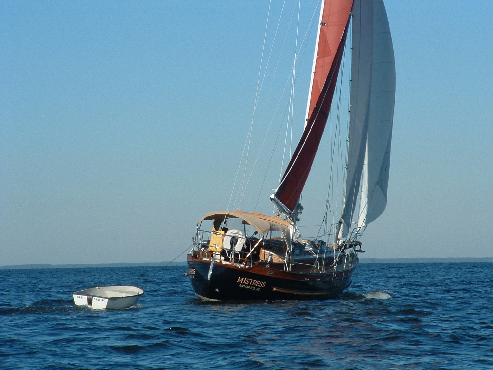
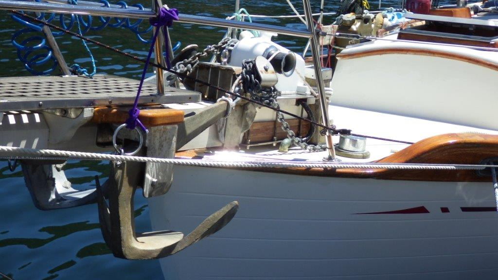
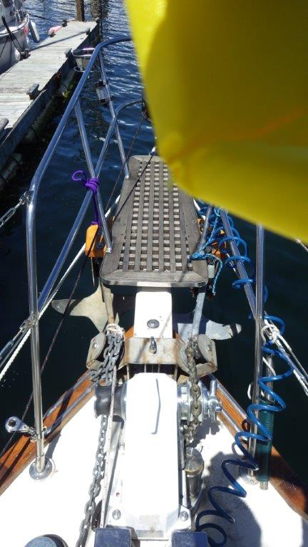
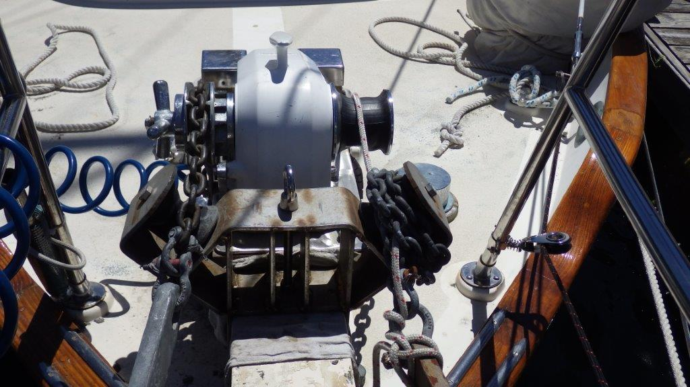
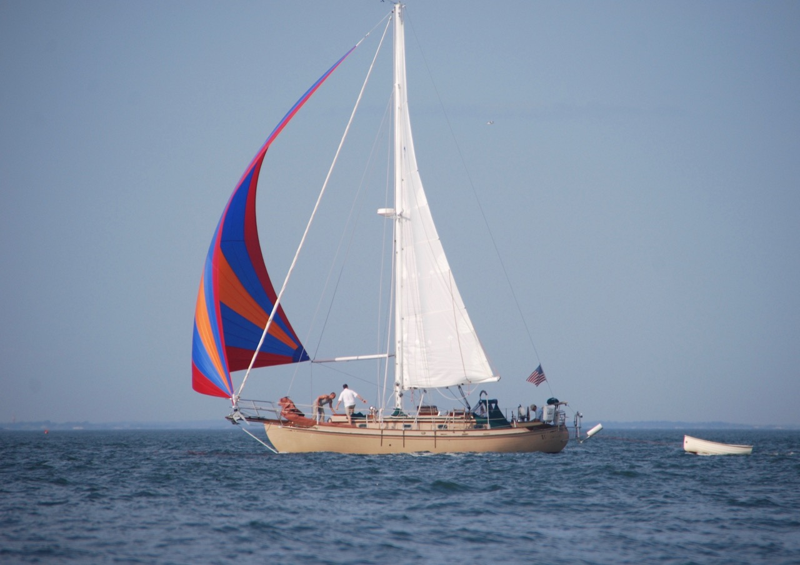
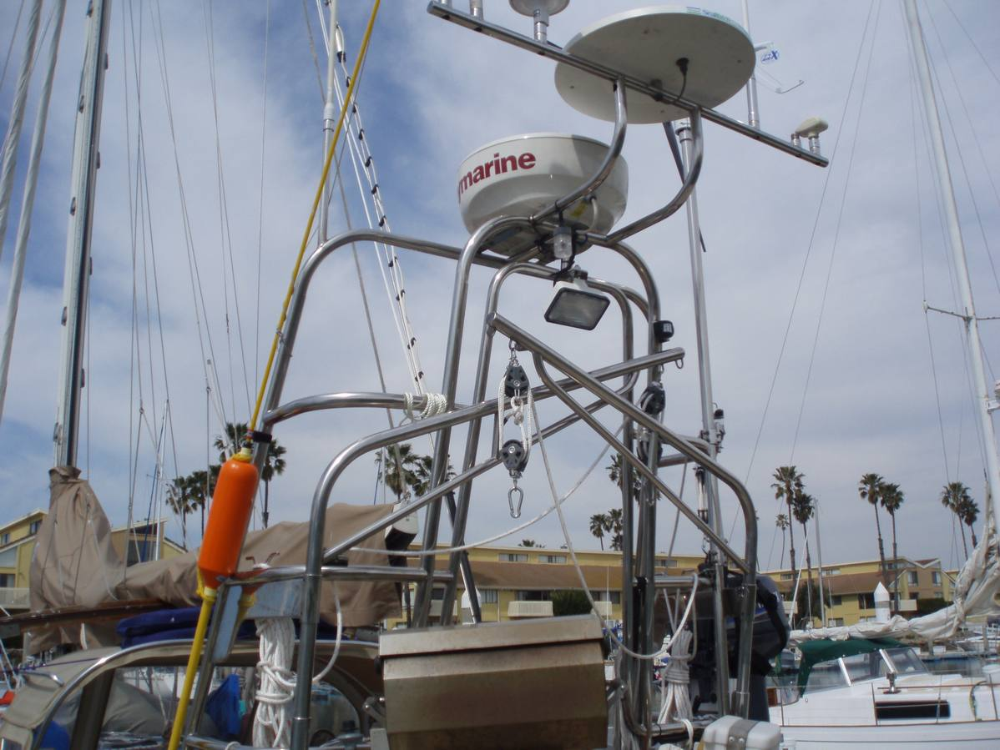

Bluewater cutter · Robert Perry
Tayana 37
A classic built for distance.
Heavy-displacement long-keel cutter with canoe stern. Designed by Robert Perry, built by Ta Yang (Taiwan) from 1976. ≈588 hulls — a benchmark traditional bluewater cruiser.
Designed as a more capable response to the Westsail 32, the Tayana 37 pairs traditional double-ended lines with solid hand-laid fiberglass construction and a practical cutter rig. Originally the CT 37, it became one of the most numerous semi-custom offshore cruisers of its generation.
- Designer: Robert H. Perry
- Builder: Ta Yang, Taiwan
- Hull: solid GRP, modified long keel, cutaway forefoot
- Stern: canoe (Baltic-inspired)
- Rig: cutter (ketch optional)
| LOA / LWL | 36.67 ft / 31.00 ft |
|---|---|
| Beam / Draft | ≈ 11.5 ft / ≈ 5.7 ft |
| Displacement / Ballast | 22,500 lb / ≈ 8,000 lb iron |
| Sail area (cutter) | ≈ 861 ft² |
| Fuel / Water | ≈ 90–100 gal each |
| Engine (original) | Yanmar 33–40 hp |
| SA/D · Ballast% · D/L | ≈ 17 · 35% · 337 |
| Comfort · Capsize · Hull speed | ≈ 41 · 1.63 · 7.46 kn |
Perry cut away the forefoot and used a Constellation-type rudder for better maneuverability while retaining full-keel directional stability. The cutter is weatherly and well suited to short-handed passagemaking.








Foredeck and anchoring







Stern, davits and power


.jpeg)






Condition and systems upgrades drive value. Survey priorities include deck core (especially teak-overlaid decks), chainplates, tankage, rigging, and auxiliary systems. The model remains actively traded and well documented.
- Proven coastal and bluewater platform
- Active secondary market
- Teak decks and older systems often need work
- Cutter preferred for passagemaking
- Semi-custom interiors vary by boat